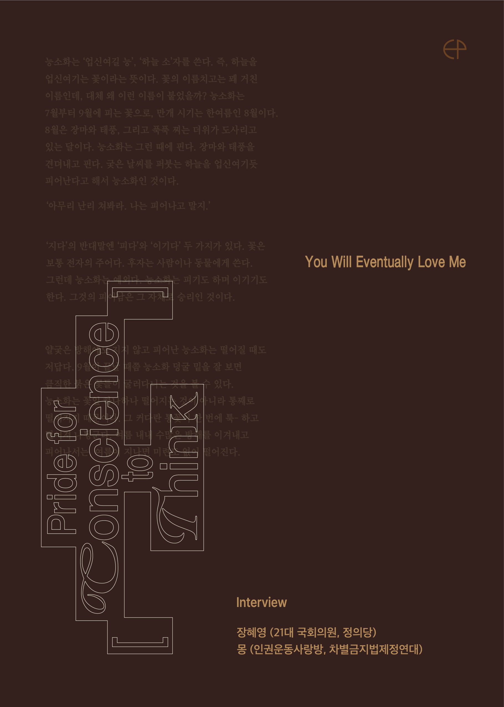

Pride for Conscience to Think 인터뷰집
프라이드 먼스를 맞아 장혜영 전 정의당 의원과 인권운동사랑방 몽과 함께한 인터뷰 프로젝트입니다. SNS 콘텐츠 게시용으로 업로드했던 작업을 다시 작업해 실물 인터뷰집으로 인쇄했습니다. 제도적 측면에서 사랑과 연대의 힘, 평등의 가치가 사회적 확장의 촉매가 되는 가능성을 고민하는 내용을 담고 있습니다.